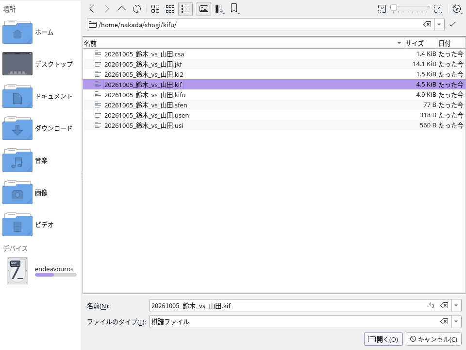
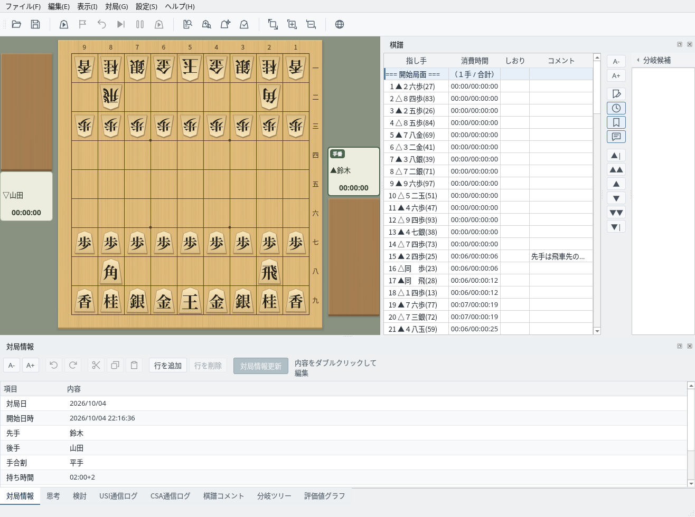
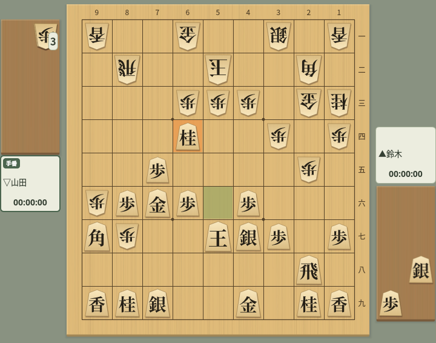
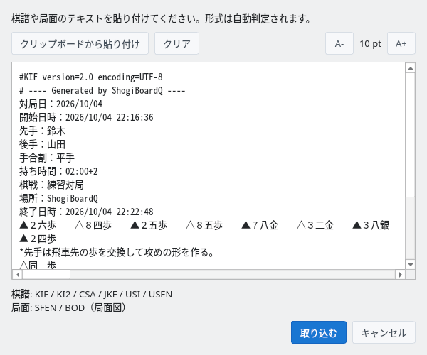

多フォーマット対応の棋譜読み込み・保存・クリップボード操作
主要な棋譜フォーマットに対応し、分岐棋譜も読み込めます
以下の棋譜フォーマットの読み込みに対応しています。
| フォーマット | 拡張子 | 説明 |
|---|---|---|
| KIF | .kif .kifu | Kifu for Windows 標準形式。手数・指し手・消費時間を記録 |
| KI2 | .ki2 .ki2u | KIF簡易形式。指し手のみを横並びで記録 |
| CSA | .csa | コンピュータ将棋協会の標準形式。座標表記で記録 |
| JKF | .jkf .json | JSON棋譜フォーマット。分岐棋譜をJSON構造で表現（.json や拡張子から分からないファイルは内容で形式を判定） |
| USI / SFEN | .usi .sfen | USIの指し手列、またはSFENの局面のみを読み込み |
| USEN | .usen | USEN圧縮形式。棋譜をコンパクトにエンコード |
メニューの「ファイル」→「開く…」から、ファイル選択ダイアログ（棋譜ファイルを開く）を開きます。「ファイルのタイプ」で表示する形式を絞り込めます。

ファイル選択ダイアログ：KIF・KI2・CSA・JKF・USI・SFEN・USEN形式のファイルを選択可能
ファイルを読み込むと、棋譜欄に指し手・消費時間が表示され、盤面は開始局面を表示します。棋譜欄や移動ボタンで任意の局面に移動できます。対局情報（対局者名、日時、手合割など）も自動的に読み取られます。

棋譜読み込み後：棋譜欄に指し手と消費時間が表示される
以下は平手から「７六歩・３四歩・２六歩」と進めた、終局していない3手の棋譜です。形式によって、対局者名や消費時間など記録できる情報が異なります。
手合割：平手
先手：鈴木
後手：山田
手数----指手---------消費時間--
1 ７六歩(77) ( 0:02/00:00:02)
2 ３四歩(33) ( 0:02/00:00:02)
3 ２六歩(27) ( 0:02/00:00:04)先手：鈴木
後手：山田
▲７六歩 △３四歩 ▲２六歩'CSA encoding=UTF-8
V3.0
N+鈴木
N-山田
PI
+
+7776FU
T2
-3334FU
T2
+2726FU
T2{
"header": {
"先手": "鈴木",
"後手": "山田"
},
"moves": [
{},
{"move":{"from":{"x":7,"y":7},
"to":{"x":7,"y":6},
"color":0,"piece":"FU"}},
{"move":{"from":{"x":3,"y":3},
"to":{"x":3,"y":4},
"color":1,"piece":"FU"}},
{"move":{"from":{"x":2,"y":7},
"to":{"x":2,"y":6},
"color":0,"piece":"FU"}}
]
}position startpos moves 7g7f 3c3d 2g2f~0.7ku2jm6y2.6つのフォーマットで棋譜を保存できます
メニューの「ファイル」→「名前を付けて保存…」から、棋譜を任意の形式でファイルに保存できます。拡張子を省略すると、保存ダイアログで選んだフィルタの拡張子が付きます。拡張子を入力した場合は、その拡張子で保存形式が決まります。
| フォーマット | 拡張子 | 文字コード |
|---|---|---|
| KIF形式 | .kif / .kifu | Shift_JIS / UTF-8 |
| KI2形式 | .ki2 / .ki2u | Shift_JIS / UTF-8 |
| CSA形式 | .csa | UTF-8 |
| JKF形式 | .jkf | UTF-8 |
| USEN形式 | .usen | UTF-8 |
| USI形式 | .usi | UTF-8 |
KIF・KI2・JKF・USENでは分岐を保存できます。CSA・USIは本譜のみ、KI2は消費時間を保存しません。USI・USENは対局者名・コメント・消費時間を保存せず、USENで表現できる終局理由にも制限があります。CSAのミリ秒単位の消費時間をKIF・JKFへ変換する場合は秒未満を切り捨てます。消費時間のある棋譜をUSENで保存するときは、保存されない情報を知らせる確認が表示されます。分岐のある棋譜をCSA・USI形式でコピーしたときは、本譜のみであることがステータスバーに表示されます。
.kif・.ki2（Shift_JIS）に保存するとき、対局者名やコメントにShift_JISで表せない文字（中国語の簡体字・繁体字の一部や絵文字など）があると、その文字を示して「UTF-8で保存」するか確認します。UTF-8で保存した場合は、ファイルの先頭行に「encoding=UTF-8」を記録します。常にUTF-8で保存するには.kifu・.ki2uを選んでください。
CSAファイルに「/」で区切られた複数の棋譜がある場合は、先頭の棋譜のみを読み込みます。
USI形式の棋譜で末尾に付く終局コードは、棋譜保存用の拡張です。エンジン通信用のUSI「position」コマンドの仕様には含まれません。
各形式の資料：KIF仕様、棋譜表記（KI2の指し手表記）、CSA V3.0仕様、JKF仕様、USI・SFEN仕様、USEN資料。
メニューの「ファイル」→「上書き保存」で、最後に読み込み・保存したファイルへ、その拡張子の形式で保存します。保存先が未設定の場合や、貼り付け・局面集から取り込んだ場合、.sfenファイルを読み込んだ場合は「名前を付けて保存」が開きます。対局後の自動保存先は対局ダイアログで指定できます。
棋譜に未保存の変更がある場合、別の棋譜の読み込み、新しい棋譜での対局開始、初期画面へのリセット、アプリの終了時に保存を確認します。「キャンセル」を選ぶか、保存を中止・失敗した場合は操作を中止します。
棋譜・局面・盤面画像をクリップボードにコピー、棋譜の貼り付けも可能です
メニューの「編集」→「棋譜コピー」から、現在の棋譜を各種フォーマットでクリップボードにコピーできます。他のアプリケーションに貼り付けて利用できます。
| メニュー項目 | 内容 |
|---|---|
| KIF形式 | 棋譜全体をKIF形式でコピー |
| KI2形式 | 棋譜全体をKI2形式でコピー |
| CSA形式 | 棋譜全体をCSA形式でコピー |
| USI形式（現在の指し手まで） | 現在表示中の手までをUSI形式でコピー |
| USI形式（全て） | 棋譜全体をUSI形式でコピー |
| JSON棋譜フォーマット | 棋譜全体をJKF（JSON）形式でコピー |
| USEN | 棋譜全体をUSEN圧縮形式でコピー |
メニューの「編集」→「局面コピー」から、現在の局面をクリップボードにコピーできます。
| メニュー項目 | 内容 |
|---|---|
| SFEN形式 | 現在の局面をSFEN文字列でコピー |
| BOD形式 | 現在の局面をテキスト盤面図（BOD）でコピー |
メニューの「編集」→「将棋盤画像コピー」で、現在の盤面を画像としてクリップボードにコピーします。ブログや解説記事への貼り付けに便利です。

盤面画像コピー：盤面を画像としてクリップボードにコピー
メニューの「編集」→「棋譜貼り付け…」で、棋譜貼り付けダイアログが開きます。テキストエリアに棋譜を貼り付けるか「クリップボードから貼り付け」をクリックし、「取り込む」をクリックすると、形式が自動判定されて読み込まれます。

棋譜貼り付けダイアログ：KIF・KI2・CSA・USI・JKF・USEN・SFEN・BOD形式を自動判定
| フォーマット | 自動判定の基準 |
|---|---|
| KIF | 「手数----」を含むか、行頭に手数と移動先がある。「手数」「指し手」という語だけでは判定しない |
| KI2 | 行頭の▲・△・▽・☗・☖に移動先が続く指し手の並び |
| CSA | V2・V3・コメント行、PIやPで始まる初期配置、対局者名・棋譜情報、または+・-に数字が続く指し手行がある |
| USI | position、startpos、sfenで始まる行、またはSFENに指し手列を付けた記述。startpos moves ... も対応 |
| JKF | { または [ で始まるJSONをJKFとして検査。取り込みにはJKFのオブジェクト構造が必要で、配列だけのJSONはエラー |
| USEN | ~で区切った手数・符号列などがUSENの構造に一致。コメントやURL内の~だけでは判定しない |
| SFEN | 盤面・手番・持駒・手数の4項目からなる局面文字列。sfenなどの接頭辞付きはUSIとして判定 |
| BOD | 指し手列を含まず、持駒の見出しや盤面図の罫線・マス表記がある |
判定できないテキストはKIFとして取り込みを試みます。形式判定後も内容を検査し、読み込めない場合はエラーを表示します。